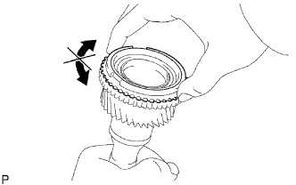

ПЕРВИЧНЫЙ ВАЛ > ПРОВЕРКА |
| 1. ПРОВЕРЬТЕ БЛОКИРУЮЩЕЕ КОЛЬЦО СИНХРОНИЗАТОРА № 2 |
|  |
Нанесите трансмиссионное масло на конус первичного вала и убедитесь, что блокирующее кольцо синхронизатора № 2 не поворачивается ни одном направлении, прижимая блокирующее кольцо синхронизатора № 2.
Прижмите блокирующее кольцо синхронизатора № 2 к конусу первичного вала. Измерьте зазор между блокирующим кольцом синхронизатора № 2 и первичным валом.